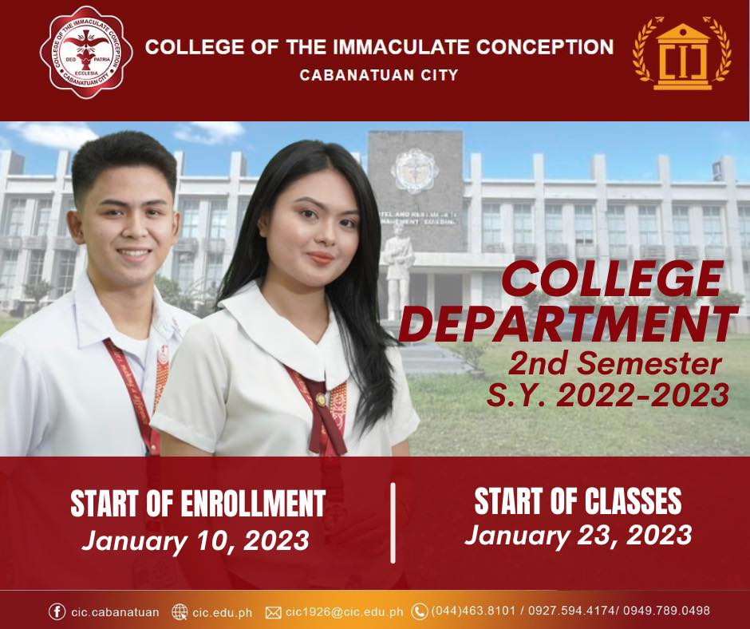
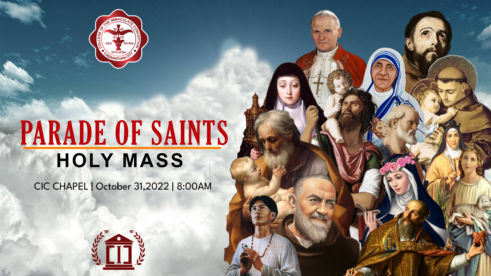
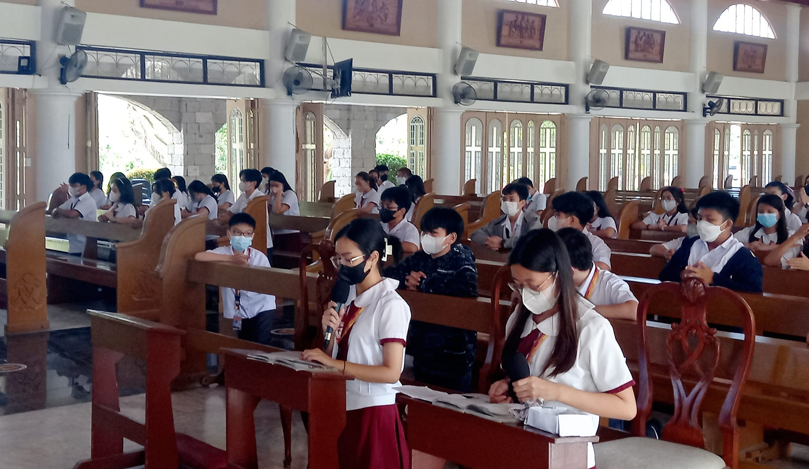

A learning community of transformed persons that provides
research-driven programs towards the development of competent,
resilient, and evangelizing individuals.
CIC is a leading Catholic Higher Educational Institution,
committed to academic excellence and holistic development of
servant leaders who love the underprivileged,
champion God’s creation, and exemplify Marian values.
Core Values:
- Christ Centeredness
- Resiliency
- Excellence
- Innovativeness
- Stewardhip
- Integrity
The College of the Immaculate Conception continued to fulfill its mission as an effective instrument of
evangelization of the Catholic church under the leadership and direction of its succeeding presidents,
namely, Msgr. Pacifico B. Araullo, Msgr. Camilo D. Gregorio, Msgr. Florentino F. Cinense, Fr. Antonio A.
Mangahas, Fr. Francisco O. Algas, Fr. Michael F.I. Veneracion, Fr. Richmond V. Nilo, and Fr. Elmer M.
Mangalinao. The College was cited for its
accomplishments in board examination performances, external quality assurance, cultural arts, athletics,
community extension programs, and church-recognized programs.

OCT 28, 2022
College Department

OCT 25, 2022
2022 Parade of Saints Anticipated Mass

OCT 23, 2022
Daily Praying of the Holy Rosary
"The rosary is a prayer both so humble and simple and theologically rich in Biblical content. I beg
you to pray it"- St.
John Paul II